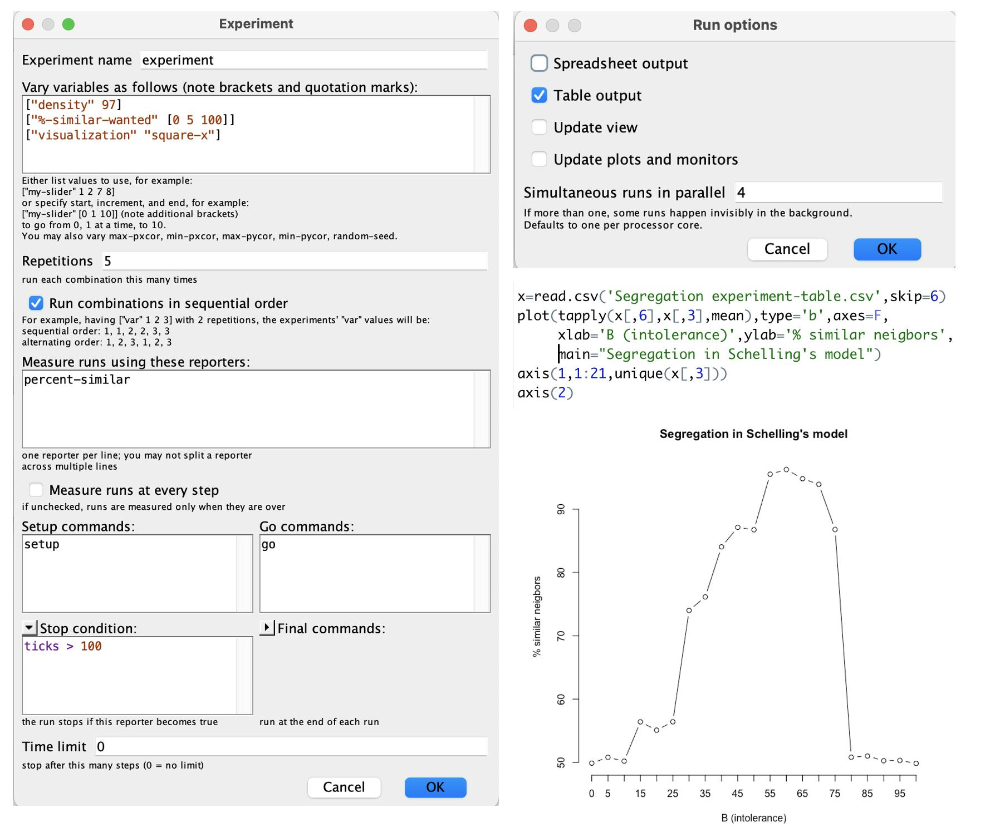
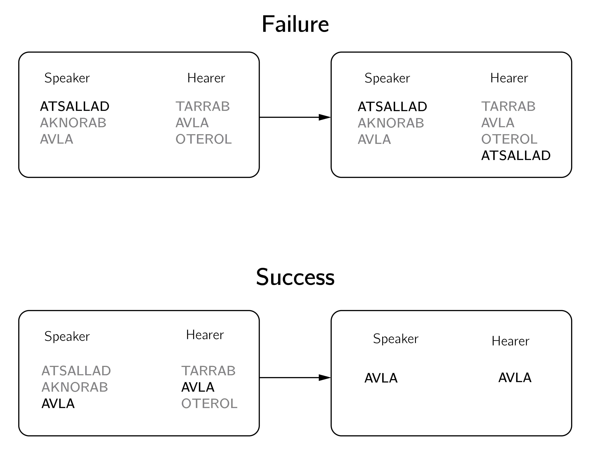
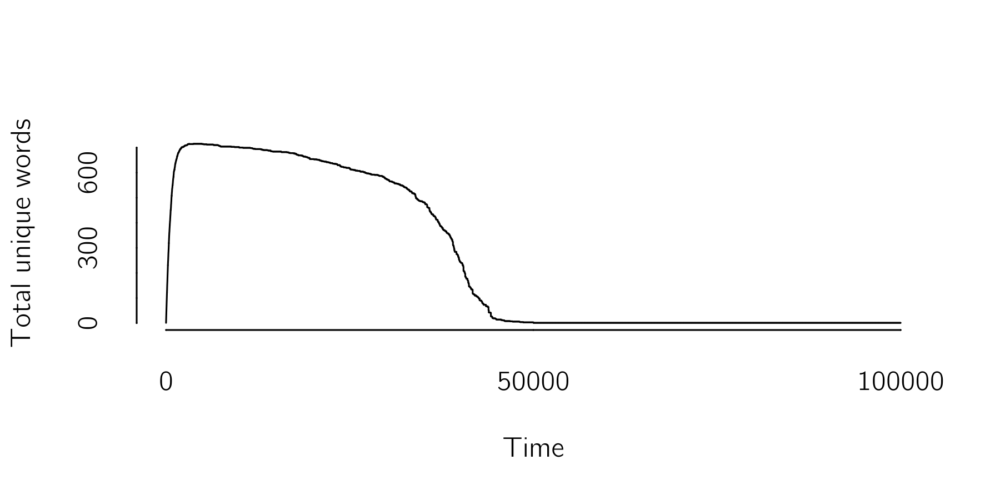
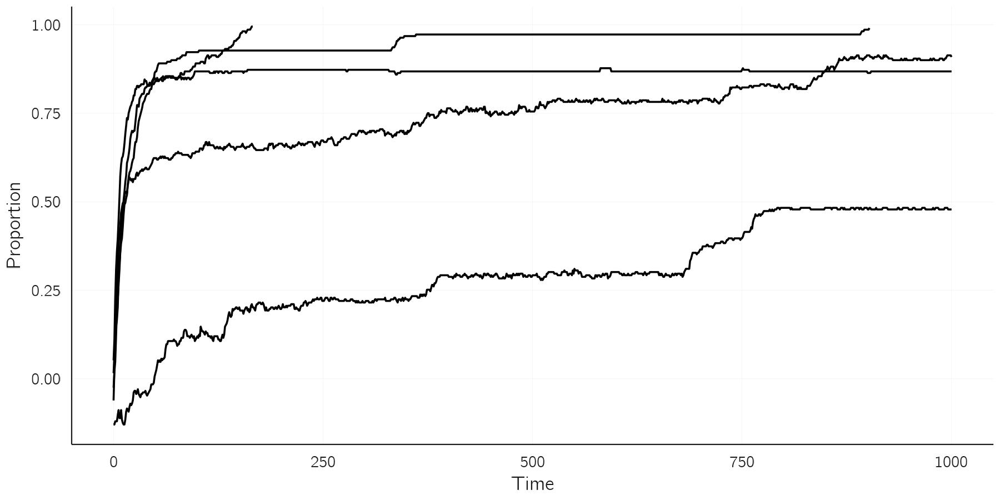
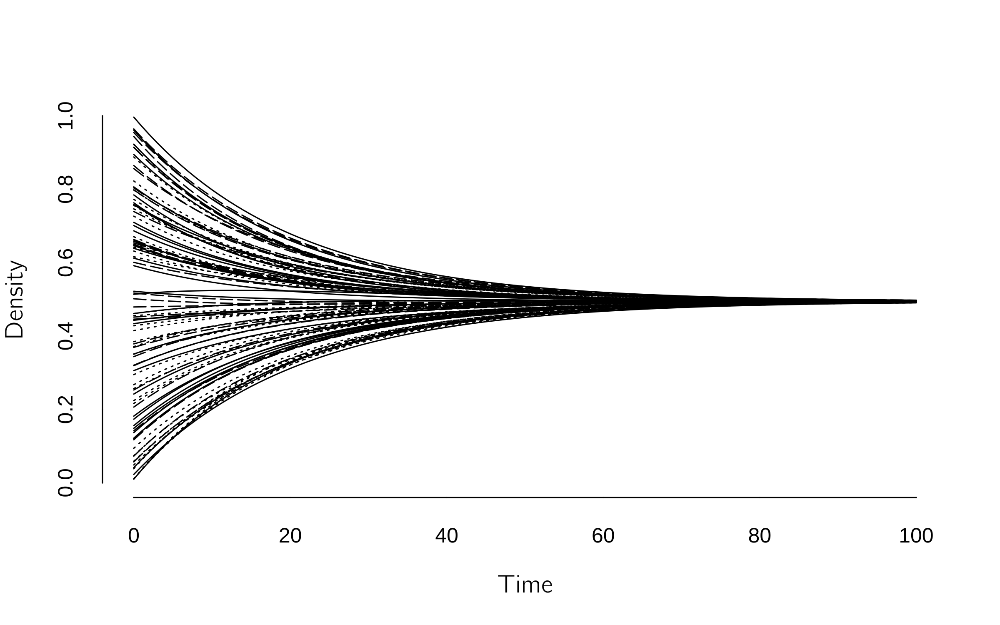
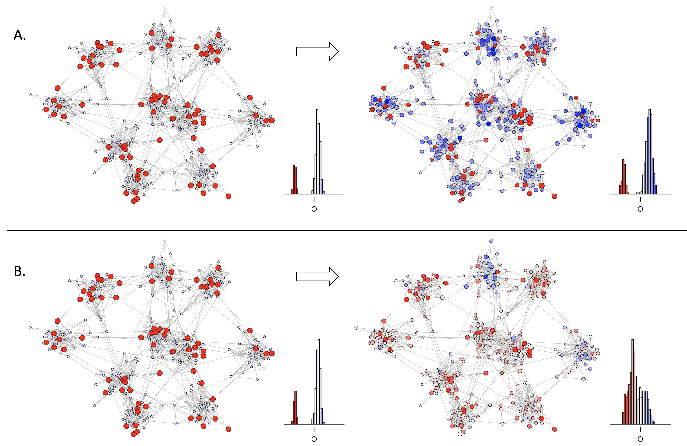

7 Sociophysics
7.1 Introduction
This chapter is dedicated to the dynamics between people. Networks of social interactions undoubtedly meet the criteria of the definition of a complex system and often exhibit unpredictability, sudden changes, and self-organization. Models of the dynamics between people are the domain of social scientists, such as sociologists, but also scientists with a background in statistical physics. Again, it is necessary to simplify, and the victim in this case is psychology. In many models, people are reduced to binary nodes, on or off, pro or contra, or to systems with only one continuous attribute. It is a challenge to add a little more psychology to the agents in these models so that more phenomena can be explained without making these models too complex to study. It is very easy to cross that line. The second part of the chapter deals with what I call psychosocial models.
I use the somewhat controversial term sociophysics as a label for this very diverse field of research, which has roots in many different sciences. It is as (in)correct as the generally accepted term psychophysics in psychology. What I like about it is that it emphasizes the intention to arrive at a formalized, mathematically stated theory of social processes, often based on formalisms first developed in physics. Alternative labels are social physics, computational social science and agent-based modeling (Goldstone and Janssen 2005).
In my broad definition of sociophysics, it deals with many different systems and processes. Examples that I have already discussed are the synchronization of movement, in the swinging of legs in a two-person system, or in a crowd of people fleeing a fire in a building. Granovetter’s threshold model of joining a dancing crowd is another example. Many papers deal with the spread of opinions, fashions, rumors, etc. This will be the main topic of this chapter. But this field also includes work on segregation, cooperation, crime, economic systems, and much more. I will present some key examples and then turn to models of the social dynamics of opinions.
Some important follow-up books to read are Smaldino (2023) on modeling social behavior, Bowles and Gintis (2011) on cooperation and altruism, Durlauf and Young (2001) on modeling social economics, the work of Epstein (2014); Epstein (2006); Epstein and Axtell (1996) on building artificial societies and Miller and Page (2007) on computation models of social life. There are also some excellent review articles on this area of research (castellanoStatisticalPhysicsSocial2009?; Noorazar 2020; Proskurnikov and Tempo 2017; Jusup et al. 2022). A less mathematically focused review is provided by Flache et al. (2017).
7.2 Some famous examples
7.2.1 Segregation
The most famous computational model for studying segregation is Schelling’s model (Schelling 1971). The simplified version of this model assumes a two-dimensional space, a cellular automaton as in NetLogo, where each location or cell is occupied by one of two types of agents or is empty. The density parameter determines how many locations are occupied. Agents stay at their location if a certain percentage of their 8 neighbors, \(B\), are of the same type as the agent. So, if \(B = 0\%\), nobody moves. For values of B close to 100%, everybody moves all the time. What Schelling showed with his model was that even low levels of intolerance, near 30%, lead to segregation. Thus, even if people can accept up to 70% of “foreign” neighbors, segregation still occurs.
The NetLogo model Segregation (Social Science sample model) demonstrates this model. Especially at high densities, transitions between the unsegregated state, the segregated state and a mixed state where agents keep moving can be seen (Gauvin, Vannimenus, and Nadal 2009). Instead of playing around with the sliders we use the BehavioralSpace option. Figure 7.1 shows the settings for this option, the R-code and the results. Note that without visualizations NetLogo is pretty fast.
One concept we saw in Chapter 5, Section 5.3.4, in the context of Haken’s work, was that of the order parameter. The order parameter literally measures the order in the system. Finding an appropriate order parameter is not always easy, and multiple definitions are often possible. We look for one that captures the qualitative phenomena in the model, such as sudden changes and hysteresis. In the NetLogo simulation, I used the percentage of similar neighbors. Gauvin, Vannimenus, and Nadal (2009) propose two, probably better, order parameters, a segregation coefficient, which requires the identification of clusters, and the density of unwanted locations, which better distinguishes between the three states of the system.

Of course, this is only an initial model that can be extended in many ways, some of which are already explored in Schelling’s original paper. For an interesting historical sketch of this line of research, see Hegselmann (2017). A different NetLogo model inspired by Schelling’s research is called “Party.” In this model, party-goers experience discomfort and change their groups if their current group consists of a disproportionate number of individuals of the opposite sex. A recent review with a focus on urban dynamics can be found in Jusup et al. (2022).
7.2.2 The evolution of language: The naming game
Languages are complex systems that emerge in a self-organizing cultural process (Steels 1995). Steels developed the naming game (Figure 7.2) to study the evolution of language For a review I refer to Chen and Lou (2019). (castellanoStatisticalPhysicsSocial2009?) provides a brief review.

The game begins with blank lists for all agents. In the first round, the speakers invent a new unique word, assuming that the possibilities are endless. We assume that there is only one object to name and that the social network is fully connected. Two agents are randomly selected from a population: one as the “speaker” and the other as the “hearer.” The speaker chooses a word from her vocabulary for the object. If the hearer is unfamiliar with the word, she incorporates it into her lexicon. If she recognizes the word, both clear their vocabularies, retaining only the word that was spoken.
The R code to simulate this process is:
resample <- function(x, ...) x[sample.int(length(x), ...)]
n <- 1000
x <- vector("list", n)
iter <- 100000
n_possible_words <- 1000000 # should be very high
total_words <- total_unique_words <- numeric(iter)
for(i in 1:iter)
{
j <- sample(1:n,1) # speaker
k <- sample((1:n)[-i],1) # hearer
# if speaker has no words, make one up (actually just number)
if(length(x[[j]])==0) x[[j]][1] <- sample(1:n_possible_words,1) else
{
spoken_word <- resample(x[[j]],1) # choose a word (actually just number)
if(any(x[[k]]%in%spoken_word)) # hearer knows the word
{
x[[j]] <- spoken_word # erase list except spoken_word
x[[k]] <- spoken_word # erase list except spoken_word
} else # hearer does not know the word
x[[k]] <- c(x[[k]],spoken_word) # add word to list
}
total_words[i] <- length(unlist(x))
total_unique_words[i] <- length(unique(unlist(x)))
}
layout(1:2)
plot(total_words,type='l',xlab='time',bty='n')
plot(total_unique_words,type='l',xlab='time',bty='n')
unique(unlist(x)) # winning wordWhich results in Figure 7.3 :

After a phase in which agents use lots of different words, a language consisting of just a single word emerges abruptly. A simplification would be the case that agents start with either word A, word B or with both words A and B. So no new words are invented. For this case we can write the time evolution in three differential equations:
\[{\frac{{dX}_{A}}{dt} = {- X}_{B}X_{A} + {\frac{1}{2}}X_{AB}X_{AB} + X_{A}X_{AB} }\\{\frac{{dX}_{B}}{dt} = {- X}_{A}X_{B} + {\frac{1}{2}}X_{AB}X_{AB} + X_{B}X_{AB}}\]
\[\begin{array}{r} \frac{{dX}_{AB}}{dt} = {2X}_{A}X_{B} - X_{AB}X_{AB} - (X_{A}+ X_{B})X_{AB} \end{array} \tag{7.1}\]
The first equation can be understood as follow. Speakers B talking to listeners A turn listeners A into AB agents. The loss in A agents is \({- X}_{B}X_{A}\). AB agents talking to AB agents become A or B agents, depending on the speaker’s choice of A or B (\({\frac{1}{2}X}_{AB}X_{AB})\). If speaker A talks to an AB agent, the latter becomes an A agent (\(X_{A}X_{AB})\). These three terms together define the change in \(X_{A}.\) The other equation follow the same logic. It is easy to implement this in Grind. There are three possible outcomes: 1) If the initial proportion of A is greater than B, A wins, 2) if the initial proportion of B is greater than A, B wins, and 3) if these proportions are exactly equal, all three options A, B, and AB coexist, but this equilibrium is unstable. Although extremely simplified, the naming game illustrates that coexistence of languages is difficult in a fully connected network.
7.2.3 Cultural dynamics: The Axelrod model
Axelrod (1997) introduced an influential model of cultural diffusion based on the effects of social interactions and homophily. Homophily refers to the tendency or preference for individuals to associate or connect with others who are similar to themselves. In Axelrod’s model, individuals become more similar through interactions but only if they already share some cultural features.
In the model, agents have F cultural features (e.g., beliefs, habits), each of which has Q possible nominal values. Agents are organized in some kind of network, for instance, a fully connected one. At each time step, two agents are randomly selected. We count the number of shared features, e.g., features with the same value. This number, divided by F, gives the probability that one of the mismatching features of one of the two agents is set equal to that of the other. Thus, if they differ on all features, nothing happens. If 50% of their features have the same value, then one of the mismatching features will change for one of the agents with a probability of 0.5.
The combination of interaction and homophily creates a self-reinforcing dynamic that often leads to global convergence toward a single culture. However, for certain choices of F and Q, the model converges to a state of diversity. In the simulation below, I use the number of remaining cultures as a simple order parameter. Castellano, Marsili, and Vespignani (2000) present detailed analyses of the phase transitions in this model using more advanced order parameters. As you can imagine, this model can be extended in many ways, for instance by introducing ordinal instead of nominal states (Macy, Flache, and Takacs 2006).
The following R-code of this model generates the left plot in Figure 7.4 . You can play with the values to see different cases.
resample <- function(x, ...) x[sample.int(length(x), ...)] # as sample(5,1) acts odd
n <- 100
iter <- 50000
F <- 4 # features
Q <- 4 # nominal levels per feature
uniques <- numeric(iter)
x <- matrix(sample(1:Q,replace=T,n*F),n,F)
for(i in 1:iter)
{
j <- sample(1:n,1) # agent 1
k <- sample((1:n)[-j],1) # agent 2
w <- sum(x[j,]==x[k,])/F # agreement
if(w<1 & runif(1)<w) {
f <- resample(which(x[j,]!=x[k,]),1) # which (unequal) feature to update
x[j,f] <- x[k,f] # update
}
uniques[i] <- nrow(unique(x))
}
plot(uniques[1:i],type='l',lwd=2,xlab='time',ylab='# unique cultures',
bty='n',ylim=c(0,80),main=paste('Axelrod model with F = ',F, ', Q = ', Q))
What I find appealing about the Axelrod model is its multidimensionality. As long as we have some characteristics or qualities in common with other people on certain dimensions, there is hope. This is why I am more concerned about polarization in the United States than in the Netherlands. In the US, it seems that all aspects of life are interconnected, and even seemingly unrelated factors such as one’s choice of jeans or favorite sport are correlated with one’s political beliefs. This greatly limits the possibilities for depolarization.
7.3 Dynamics of opinions
In that same famous paper, Axelrod asked an important question: “If people tend to become more alike in their beliefs, attitudes, and behavior when they interact, why do not all such differences eventually disappear?”
The answer to Axelrod’s question is usually posed in terms of limited interactions between agents. In Axelrod’s model, for example, it was due to selective interaction between agents. In continuous opinion models, it is due to bounded confidence, i.e., agents that are too different refuse to interact. In some models, there is simply no connection between subgroups in a network. I will give some examples.
It is hard to count the number of opinion-spread models, but it could easily be in the hundreds, if you count all the variants. They all share a few building blocks. First, there has to be some topology to the social network. Modelers make different choices here, often fully connected networks are assumed because they allow an analytical approach, others use random networks, lattices, small world networks, etc. The problem is that we don’t really know how real social networks work, except that they are incredibly complex (Newman and Park 2003). Second, you need to define some interaction rules. For example, two agents might end up in the middle after a discussion, or one agent might copy the other’s state, or one agent might take over the majority vote in its local neighborhood. Finally, you have to define opinion. A major division in social contagion models is whether opinions are defined as discrete or continuous. I will first discuss several discrete opinion models.
7.3.1 Discrete opinion models
7.3.1.1 Voter models
The simplest possible model seems to be the voter model. In its basic form, with only two possible opinions (-1, 1), two connected agents A and B meet, and A simply copies B’s opinion. What happens in this simple system depends on the topology of the network, i.e., its dimension (either \(d = 1\) (on a line), \(d = 2\) (a lattice) or \(d > 2)\) and its size \(N\). In more than 2 dimensions and with infinite size, the voter system does not converge, but in other cases it converges to a state of all -1s or all 1s (castellanoStatisticalPhysicsSocial2009?; Redner 2019). The probability of ending up in the +1 state is equal to the initial probability of +1s. How long it takes to converge can also be derived analytically. The convergence time is proportional to \(N^{2}\), for voters on a line (\(d = 1\)), \(NlnN\) for \(d = 2\), and \(N\) for \(d > 2\). Thus the convergence is slowest when agents are connected in a line.
In the heterogeneous voter model, each agent A copies the opinion of agent B with some probability \(r_{i}\). In this way, one can study the effect of stubborn voters (with low \(r_{i}\)). It turns out that the small group of stubborn individuals (sometimes called zealots) can overcome the majority opinion. Many other variants have been analyzed, such as adding memory and noise to the voters (castellanoStatisticalPhysicsSocial2009?). It is also possible to consider three groups, left, center, and right, where left and right do not interact. In this case, depending on the initial proportion, we end up in a state of full consensus in one of the states or with a mixture of extremists without centrists (Redner 2019). Finally, the topology of the social network plays a role. In general, consensus is reached quickly in scale free networks with broad degree distributions.
Another approach has been proposed by Martins (2008). The Continuous Opinions and Discrete Actions (CODA) model combines discrete and continuous aspects of opinion dynamics. Agents act discretely but update their continuous opinions based on observations of other agents’ discrete actions.
IN CODA there are two choice options, A and B, and agent \(i\) has some subjective probability \(p_{i}\) that A is the best option, and \({1 - p}_{i}\) for B. The actual choice is made according to \(sgn\left( p_{i} - .5 \right)\), so A is chosen when \(p_{i} > .5\). Next, the agent observes other agents. Agents assume that other agent make rational choices, i.e., choose A when A is the best option with a probability \(a\) that is larger than .5. In running the model, it is convenient to work with the log-odds of probabilities, \(v_{i} = ln\frac{p_{i}}{1 - p_{i}}\). Using the Bayes’ theorem, we can update \(v_{i}\) to \(v_{i} + a\) when agent j chooses A and to \(v_{i} - a\) if the choice is B. Martins (2008) integrates these decision rules with the voter model, showing extreme forms of polarization, i.e., a strongly bimodal distribution of opinions.
7.3.1.2 More discrete opinion models: majority type models
In the voter and in the Axelrod models, interactions are limited to two agents. When multiple neighbors have an impact on each agent, many new options arise. One option is the Ising model (Galam, Gefen (Feigenblat), and Shapir 1982). Agents switch sides with a probability that depends on the states of their neighbors. The temperature variable in the Ising model is translated into randomness in the model. The external field is now interpreted as an external social field. In this way one can explain phase transitions and hysteresis in opinion dynamics.
Another, deeply analyzed, option is the majority model (galamSociophysicsReviewGalam2008?; Redner 2019). Here, a random group of voters is selected and all voters in this group adopt the local majority opinion. This process can be repeated until convergence to one opinion is reached (which will always happen in a finite population). (galamSociophysicsReviewGalam2008?) sets up this process in a hierarchical fashion (see Figure 7.5). Alternatively, only one voter could be influenced by the majority vote in its neighborhood. This corresponds to the Ising model with zero temperature.

Another case is the \(q\)-voter model (Castellano, Muñoz, and Pastor-Satorras 2009; Jędrzejewski and Sznajd-Weron 2019). Here, agents change their opinions only if all \(q\)-voters selected from the neighborhood agree on the other opinion. When \(q = 1\), this reduces to the standard voter model. The \(q\)-voter model generally allows for a higher degree of opinion diversity compared to the basic voter model. The \(q\)-voter model has been implemented in NetLogo (“qvoter_WS” in the models online available).
In the basic Snzadj model, agents are placed on a line, and two neighbors with the same opinion spread this opinion to their own neighbors. If they disagree, they enforce their disagreement on their neighbor. Thus (?,1,1,?) becomes (1,1,1,1) and (?,-1,1,?) becomes (1,-1,1,-1). This can converge to a state of all 1s, all -1s, or a sequence of 1 and -1 pairs. The latter state is reached with a probability of 0.5. This model has also been extended in many ways, such as adding an election process (Sznajd-Weron, Sznajd, and Weron 2021).
7.3.1.3 Social Impact theory
The last discrete model I mention here is the Social Impact Model, which is based on Latané’s (1981) psychological theory of social impact. Latané introduced many ideas and concepts from complex systems theory into social psychology. His psychological theory is firmly grounded in social psychology and supported by all kinds of evidence (Karau and Williams 1993).
In this theory, opinion change depends on social impact \(I\). Opinions \(X\) are either -1 or 1. Social impact is a function of the persuasiveness (\(p_{i}\)) of opponents (connected agents with the opposite opinion), the supportiveness (\(s_{i}\)) of supporters (with the same opinion), and the distance (\(d_{ij}\)) to these agents. The effect of distance can be modified with \(\alpha\). As the value of \(\alpha\) increases, the influence of agents located farther away diminishes. All these parameters are positive random values. The impact \(I\) is defined as:
\[I_{i} = I_{i}^{P} - I_{i}^{S} = \left\lbrack \sum_{j = 1}^{N}{\frac{p_{j}}{d_{ij}^{\alpha}}\left( 1 - X_{i}X_{j} \right)} \right\rbrack - \left\lbrack \sum_{j = 1}^{N}{\frac{s_{j}}{d_{ij}^{\alpha}}\left( 1 + X_{i}X_{j} \right)} \right\rbrack\]
With \(j\) we take the sum over the neighbor of agent \(i\). Note that when \(X_{i} = X_{j}\), \(I^{P} = 0\) due to the \(1 - X_{i}X_{j}\) term, and the same is true for \(I^{S}\) when \(X_{i} \neq X_{j}\). The effects of persuasiveness and supportiveness are reduced as the distance between agents increases. Setting α to values greater than 1 reduces the effect of distant neighbors. In addition to these forces, the theory assumes an external field\(\ H\), as in the Ising model. The dynamics of opinions is:
\[X_{i}(t + 1) = - sgn\lbrack X(t)I_{i}(t) + H_{i}\rbrack\]
Thus, opinion of agents become -1 if \(X(t)I_{i}(t) + H_{i}\) is negative, and vice versa. Lewenstein, Nowak, and Latané (1992) present analytical mean-field solutions for fully connected networks. Without individual fields, the model ends up with an infinite number of stationary opinion states, one of which is usually dominant.
In the presence of individual fields, some minority opinions can become metastable. These metastable opinions may persist for some time, but eventually, due to noise or other factors, they may suddenly shrink to smaller clusters. These smaller clusters can also persist for a long time before shrinking again, and the process repeats itself, resulting in what is called staircase behavior. Such a model can explain why small minority groups (such as flat-earth beliefs) often persist for long periods of time, against all odds (Douglas, Sutton, and Cichocka 2017).

Extensions of this model include learning, leadership, external influences and identity effects (for a review, see Holyst, Kacperski, and Schweitzer 2001).
7.3.2 Continuous opinion models
7.3.2.1 Classic models
Another line of research, with its own history, starts from the assumption that opinions are continuous variables (for a recent review see, Noorazar 2020). A classical model is the DeGroot model, where agents are connected in a weighted network. At each iteration, an agent’s opinion is set equal to the weighted average of all connected agents in the network. Thus opinions tend to converge. The Friedkin-Johnson model (Friedkin and Johnsen 1990) is an extension that includes a confidence level for each agent. This confidence of the agent in his own opinion reduces the effect of others. Clustering or polarization in these linear models can only occur if parts of the network are unconnected. The Friedkin-Johnson model can be efficiently simulated with Grind (using the method='euler' option) by:
FJ <- function(t, state, parms){
with(as.list(c(state,parms)),{
X <- state[1:n]
M <- M/apply(M,1,sum) # weights sum to 1
dX <- (1-g) §* M %*% X + g * X - X
return(list(dX))
})
}
n <- 100
M <- matrix(runif(n^2,0,1),n,n)
g <- .95 # if g = 0 => DeGroot model
x0 <- runif(n,0,1)
s <- x0;p <- c()
run(odes=FJ,method='euler',tmax=100)
With an additional bias mechanism, in which confirming evidence is weighted more heavily relative to disconfirming evidence, polarization can also occur in connected networks (Dandekar, Goel, and Lee 2013).
7.3.2.2 Bounded confidence
The bounded confidence mechanism has been extensively studied as the most effective way to generate divergence of opinions in continuous opinion models. It assumes that individuals have a limited willingness to accept and consider opinions that differ from their own and will only update their opinions if they are within a certain range or “bound” of similarity.
A simple but very interesting model is the Deffuant model (Deffuant et al. 2000). The initial opinions of n agents are randomly set to values between 0 and 1. At each step two agents \(i\) and \(j\) meet. If \(\left\lceil X_{i}(t) - X_{j}(t) \right\rceil > \epsilon\) nothing happens because the difference in opinion exceeds the bound \(\epsilon\). Otherwise, they exchange opinions according to:
\[X_{i}(t + 1) = \ X_{i}(t) + \ \mu(X_{j}(t) - X_{i}(t))\]
\[\begin{array}{r} X_{j}(t + 1) = \ X_{j}(t) + \ \mu\left( X_{i}(t) - X_{j}(t) \right) \end{array} \tag{7.2}\]
So, if \(\mu = .5\), they find each other in the middle. If \(\mu = 1\), they take each other’s position, as in the voter model. The value of \(\mu\) does not make much difference but the model converges fastest with \(\mu = .5\). However, the choice of the bound \(\epsilon\) makes a big difference. For \(\epsilon = 0,\) all agents stick to their positions, for \(\epsilon > .5\), they all converge to \(X = .5\). For intermediate values different forms of clustering occur (Figure 7.8). It has been shown that the topology of the network does not make much difference (Fortunato 2004). A drawback of this model is that it converges slowly. A fast but not entirely accurate code to simulate this model is: 1
set.seed(20)
layout(matrix(1:4, 2, 2))
iter <- 50; mu <- .5; n <- 200
for (bound in c(.1, .2, .3, .5))
{
x <- runif(n, 0, 1)
dat <- matrix(0, iter, n)
for (i in 1:iter)
{
y <- sample(x, n, replace = T) # find an partner for every agent
x <- ifelse(abs(x - y) < bound, x + mu * (y - x), x)
dat[i, ] = x
}
matplot(dat,type='l',col=1,lty=1,bty='n',xlab='',
ylab='opinion',main=paste('bound = ',bound))
}
With this code you can explore many scenarios and variants. One interesting option is to have agents with different boundaries. It turns out that adding some open-minded agents helps prevent polarization (Weisbuch et al. 2002). Also, adding some noise to X at each time step reduces polarization (Zhang and Zhao 2018). One can also lower the bound with the number of interactions. This increases the polarization (Weisbuch et al. 2002). One case I find interesting is increasing the bound after polarization emerged for a low bound. This gives hysteresis. A bound of 0.5 is sometimes insufficient to reduce polarization. (castellanoStatisticalPhysicsSocial2009?) review some other extensions (the role propaganda, for instance).
Another well-known model is the Hegselmann-Krause (HK) model (Rainer and Krause 2002). This model is very similar to the Deffuant model, but instead of communicating with one other agent, they communicate with all connected agents, but only if the difference in opinion with these agents is small enough. Thus, agents average the opinion of all connected agents for which the difference in opinion is less than the bound. This model is an extension of the DeGroot model and can be simulated by adding two lines to the FJ code,
accapted <- abs(outer(X,X,'-')) < bound # acceptable neighbors
M <- accepted * Mafter the X <- state[1:n] line and adding bound = .1.

Again, many extensions have been studied. A recent paper studies the case where the network topology is a function of cognitive dissonance in opinions (Li et al. 2020). Baumann et al. (2020) present a continuous opinion model of echo chambers. Of particular interest is the multidimensional case (Lorenz 2007). When agents accept interaction based on the minimum distance along one dimension. Consensus can be reached more easily. The idea of bounded confidence has been associated with the concept of the latitude of acceptance as proposed in Social Judgment Theory (Sherif and Hovland 1961). This theory also proposes a latitude of rejectance. There are two bounds, a lower and an upper bound. Below the lower bound, agents reduce their differences, between the bounds they ignore each other, and if they differ more than the upper bound, they increase their differences. This scenario has been investigated in Jager and Amblard (2005).
In the online library of NetLogo you can find the model “BC”, which simulates both the standard Deffuant and the HK models.
7.3.3 Empirical verification
(castellanoStatisticalPhysicsSocial2009?) note a striking imbalance between empirical evidence and theoretical models, in favor of the latter. It is not that there are no empirical data on the dynamics of opinions. Data come from studies on voting behavior, multi-country panel surveys, social media and laboratory studies (for a review, see Peralta, Kertész, and Iñiguez 2022). The problem seems to be that these data do not discriminate between models. Most of the data fit all opinion models, supporting the general modeling approach but not specific models. This relates to the point that current opinion models are difficult to falsify because they lack specificity and are too flexibility. Flache et al. (2017) argue that the field suffers from a lack of systematic comparison of competing models. The theory construction approach outlined by Borsboom et al. (2021) may be helpful here. We need a list of generally agreed phenomena that all models are supposed to explain.
7.4 Psychosocial models
In the introduction to this chapter, I said that psychology is the victim of the simplifications necessary to develop sociophysics models. In this section we explore ways to make these models a bit more psychologically realistic. Several existing models already include additional psychological variables (Jager 2017). The Social Impact model is a good example since it incorporates persuasiveness and supportiveness of agents to determine opinion change. The model is also based on a well-known theory in social psychology. Other models include stubbornness, cognitive dissonance, and confidence (castellanoStatisticalPhysicsSocial2009?). All of these parameters are used to modify the interactions between agents.
Here I will discuss the model proposed in (vandermaasPolarizationIndividualsHierarchical2020?), which uses three dynamic variables to describe agents: information, involvement and opinion. Individual agents are described by the cusp catastrophe as shown in Figure 3.13 . This is somewhat similar to the work of (sobkowiczDiscreteModelOpinion2012?), who used the cusp model for the individual agent, using emotion and information as dynamic control variables. As in our model, interactions between agents change both opinions and the control variables. For example, agitation spreads across agents. However, in his opinion model, Sobkowicz reduces the cusp dynamics to a three-state system, where opinions are either -1, 0 or 1. We will not adopt this simplification, as much of the interesting dynamics (hysteresis within agents) are lost.
7.4.1 Networks of attitude networks
Our starting point is the Ising Attitude Model explained in Chapter 6, Section 6.3.3. In this model, attitudes or opinions are conceptualized as networks of feelings, behaviors, and beliefs about the issue. This new view of attitudes has been well received in the literature and applied to a number of attitudes (e.g., Chambon et al. 2022; Turner-Zwinkels and Brandt 2022; Zwicker et al. 2020). The idea is to use this attitude network model as a model for individual agents.
The resulting model becomes very complex, it is a network of networks model. This is not a new idea. Hierarchical or multilayer network models, such as multilayer neural networks (Treur 2019) and multilayer voter models (masudaVoterModelTwoclique2014?), have been applied in many domains (for a review, see boccalettiStructureDynamicsMultilayer2014?). However, such a model contains an enormous number of parameters and is hard to study. We take a simpler approach.
As discussed in Section 6.3.3, the average behavior of the spins in the Ising model (the mean field) can be represented as a cusp catastrophe. This reduces the complexity enormously since the cusp attitude model contains only one equation with three variables, opinion (magnetization), information (external field), and attention or involvement (inverse of the temperature). Our model, the Hierarchical Ising Opinion Model (HIOM), is an Ising-type social network in which each agent is a cusp. Interactions affect information and attention, leading to changes in opinion. We saw networks of interacting cusps in Section 4.2.8.1. The HIOM is an extended form of this model.
The HOIM model can be found in the online Netlogo models (‘HIOM.nlogo’). In the Netlogo, the equation and algorithm differ slightly from the original paper, mainly to speed up the simulation. The equations here are those used in the Netlogo model.
7.4.1.1 The HIOM model
Like other opinion models, the Hierarchical Ising Opinion Model (HIOM) makes assumptions about a) the topology of the network, b) the interactions between agents, and c) the definition of opinion.
The qualitative results of the HIOM do not depend on the topology of the social network. In (vandermaasPolarizationIndividualsHierarchical2020?) the results are replicated for different topologies (e.g., 2d lattices, stochastic block models). However, as in other opinion models, more subtle results (e.g., convergence speed) are likely to depend on the network topology. For (b), the interactions between agents, specific assumptions are made, which are explained in the next section.
Regarding (c), the definition of opinion, the HIOM is special. Opinion is defined as a cusp. In the review of opinion models, I distinguished between discrete and continuous opinion models. Interestingly, the cusp behaves continuously for low values and discretely for high values of the splitting variable. Thus, whether opinion behaves discretely or continuously depends on another continuous variable (attention or involvement).2 In this way, the HIOM bridges these two modeling traditions. A strength of the HIOM is that the definition of opinion is based on the Ising Attitude Model, a psychological network model of attitudes and opinions that has been developed and supported in a number of papers (see Section 6.3.3).
It is important to realize that the HIOM inherits assumptions from the Ising Attitude Model. First, this model assumes that attitude nodes (representing feelings, beliefs and behaviors towards the attitude object) are binary (-1,1). This is clearly debatable. Nodes might be better defined as (0,1) nodes, (-1,0,1) nodes, or even continuous value nodes as in the XY model (Kosterlitz 1974). Second, we assume undirected pairwise interactions between nodes, whereas there is much to be said for directed effects. Third, attitude networks should be reasonably balanced (see Section 6.3.3.4). To some extent, these assumptions can be relaxed without breaking the link to the cusp (see the appendix of vandermaasPolarizationIndividualsHierarchical2020?).
In the HIOM, information and attention are updated based on interactions between agents. Information and attention are two orthogonal axes in the cusp. Information summarizes all variables and influences operating along the normal axis of the cusp. Its neutral value is 0, and negative and positive values are associated with negative and positive opinions. Attention has non-negative real values. The opinion of agent \(i\) is a stochastic differential function (Section 3.5.2.1) of information and attention.3:
\[\begin{array}{r} dO_{i} = \ - \left( O_{i}^{3} - {(A}_{i} + A^{\min})O_{i} - I_{i} \right)dt + s_{O}dW_{i}(t) \end{array} \tag{7.3}\]
Spontaneous jumps in the dynamical behaviour of this equation are shown in Figure 4.2 (for \(I = 0\), \(A_{i} + A^{\min} = 1\) and \(s_{O} = 0.4\)).
7.4.1.2 Agent interactions: information and attention
The HIOM makes three assumptions about interactions. First, it assumes that agents initiate interactions based on their involvement. The idea is simply that I’m not likely to start a discussion about a topic, say abut genetically modified food, if I’m not interested in the topic. The probability of initiating an interaction is equal to attention:
\[\begin{array}{r} P_{i}(initiates\ interaction) = \ A_{i} \end{array} \tag{7.4}\]
Second, it is assumed that the attention or involvement slowly decreases over time. Attention or involvement is a limited resource, and I cannot be involved in everything all the time. With the constant emergence of new interests or topics, attention to older topics tends to wane. Third, attention increases again through social interactions. If someone starts a conversation about genetically modified food, my interest in the topic is likely to increase. A simple way to implement this is:
\[\begin{array}{r} \frac{dA_{i}}{dt} = - {{decay}_{A}A}_{i} + {d_{A}u}_{i} \end{array} \tag{7.5}\]
The first part is the decay in attention applied to all agents. When the agent is involved in an interaction, we set \(u_{i} = 1\), otherwise \(u_{i} = 0\). The parameter \(d_{A}\) determines the rate of change of \(A\) due to interactions.
The fourth assumption is about information. We assume that the exchange of information is an averaging process weighted by attention. If agent \(i\) is less attentive to the attitude object than agent \(j\), agent \(i\) will move more to the information position of \(j\) than \(j\) will move to \(i\). This is formalized by:
\[\begin{array}{r} I_{i} = {rI}_{i} + (1 - r)I_{j},\ where\ r = r_{\min} + \frac{1 - r_{\min}}{1 + e^{- p\left( A_{i} - A_{j} \right)}} \\ I_{i} = {{decay}_{I}\ (I}_{i} + Ν(m_{I},s_{I})) \end{array} \tag{7.6}\]
where \(I_{i}\) and \(I_{j}\) denote the information of agents \(i\) and \(j\). Resistance, \(r\) in [0,1], determines the relative impact of agent \(j\) on agent \(i\). Resistance or stubbornness is a logistic function of the difference in attention between the agents. Thus, if \(A_{i} \ll A_{j}\), \(r\) will be close to zero and the information in agent \(i\) will change to the value of the information in agent \(j\). The strength of this effect, persuasion, is determined by the steepness, \(p\), of the logistic function. The parameter \(r_{\min}\) determines the minimal value of \(r\). If \(r_{\min}\) is high, \(r\) will be high and agents will stick to their information state. If \(s_{I} > 0\) some normally distributed noise with mean \(m_{I}\) is added. If \(m_{I} \neq 0\) and \(s_{I} = 0\), a constant external field is active.
7.4.1.3 Algorithm
The model is now in place and can be simulated by following the steps below:
Select a network topology.
Set the model parameters \(dt\) (.01), \(A_{\min}\) (-.5), \(s_{O}\) (.01), \(m_{i}\) (0), \(s_{i}\), \(d_{A}\), \(p\), and \(r_{\min}\). Values in parentheses are defaults.
Initialize agents, set \(I_{init},\ A_{init},\) and \(O_{init}\).
Iterate
Randomly choose a set of agents, weighted by attention \(A\) (Equation 7.4).
Iterate over this ‘active’ set:
For each agent randomly choose a neighbor as partner in the interaction.
Add attention to both agents (Equation 7.5, \(+ \ d_{A}u_{i}\)).
Exchange information (Equation 7.6).
Apply decay in \(A\) to all agents (Equation 7.5, \({\ decay}_{A}A_{i}\)).
Add noise and apply decay in I to all agents (Equation 7.6, \({decay_{I}\ (I}_{i} + Ν(0,s_{I})\)).
Update opinion \(O\) in all agents (Equation 7.3).
The \({decay}_{A}\) has a special role in the current implementation of the HIOM. Instead of being fixed, it depends on the difference between the percentage of agents in the ‘active’ set and the desired percentage of active agents (%active_agents), which is controlled by one of the sliders in the NetLogo model. This allows us to manipulate the general interest (attention) in the opinion object.
There is no obvious stop criterion but in practice some type of convergence happens over time.

In the standard setup, you can see that high attention (set %active-agent high) leads to polarization. If you now decrease the difference in information (set decay_I to .5), the polarization remains even if the difference in underlying information is 0. Only if you also decrease attention (set %active-agents low), the polarization disappears. This is the first simulation described in (vandermaasPolarizationIndividualsHierarchical2020?). The second and third simulation are described in the next two sections.
7.4.1.4 The persuasion paradox
Suppose we have a network of conservative but low attentive agents into which we add a few highly attentive activists with the opposite information and opinion. At first glance, one would expect the activists’ opinion to spread quickly. They initiate all interactions (according to Equation 7.4) and have much more impact on their interaction partners than vice versa (Equation 7.6). However, this is not what happens. This scenario leads to polarization. The attention of the conservatives is raised, and people get a strong opinion against the activists. Figure 7.11 shows this effect, which of course, depends on some parameter settings. If attention increases more slowly, activism may spread better. You can test this scenario in the NetLogo model by selection ‘setup-black-pete’ and ‘add-activists’. Activists can now be added by clicking in the world. Vary persuasion \(p\) and \(d_{A}\ (\)da) to see different effects.
What is new in this model? It shows a new mechanism for polarization, namely hysteresis within agents, leading to the persuasion paradox. Without a cusp for the individual opinion dynamics, this form of polarization would not occur.

7.4.1.5 A counterintuitive prediction
In continuous opinion models the main reason for polarization is bounded confidence. We can easily add this to the HIOM: when \(\left| O_{i} - O_{j} \right| > \epsilon,\) there is no interaction (no increase in attention and no exchange of information). This would even increase the polarization in the HIOM. However, since opinion and information can have opposite signs due to hysteresis, there is a way out. An example would be a meat-eating vegetarian, a person with a vegetarian point of view who actually eats meat. I claim to be such a vegetarian, but this position is not generally accepted in my local environment.
The scenario, simulated in (Maas, Dalege, and Waldorp 2020a), consists of a majority of low-involved meat eaters and highly involved vegetarians. The meat eaters refuse to talk to the vegetarians due to bounded confidence, leading to increased polarization.
Now some attentive vegetarians will be perturbed into the meat-eating position. This is a metastable state. This state is somewhat stable, although there may jump back after a few iterations. But while the vegetarians are in this metastable meat-eating state, they can communicate with the less involved meat-eaters and spread vegetarian information. This proves effective (see Figure 7.12). This scenario is also implemented in the NetLogo model.

7.4.1.6 Variants of the HIOM
What appeals to me about the HIOM is its ability to incorporate a greater degree of psychological insight into opinion dynamics models, resulting in a novel explanation for polarization attributed to hysteresis within individuals. Furthermore, it presents an untested, counterintuitive prediction that warrants further investigation.
What is also unique about this model is the role of attention/involvement. It shows the risks of too low and too high values of this variable. Too high values lead to extreme hysteresis effects in agents, making a change of opinion impossible. This is clearly a dilemma for activists. But too little involvement is also risky. Talking to a person with very low involvement may have a positive short-term effect, but no long-term effect. The moment you stop influencing such agents, the attitude nodes start behaving randomly again, and they will move back to the neutral opinion at the back of the cusp. The persuasion paradox and the involvement dilemma need further study, but they seem important.
What I like less is that the HIOM is perhaps too complex, which makes it difficult to study its behavior. One solution might be to rewrite the HIOM in terms of only differential equations (Equation 7.6 is not). Another idea is to make attention a network parameter. An attentive agent simply has many connections to other agents. As attention decreases, this translates into fewer connections.
A more radical simplification that still uses the attention/involvement idea is a voter model with three votes (leftist, centrist, and rightist), as in the constrained 3-state voter model (Redner 2019). Leftists and rightists don’t talk to each other (bounded confidence), but they do talk to the centrists. What we add to this model is attention. Extremists (left and right) have high attention, while centrists have low attention. As in the HIOM, more attentive agents are more persuasive, so centrists tend to become more extreme due to interactions. On the other hand, attention is costly and there is a probability that extremists spontaneously decay to the centrist position. Such a model can be studied analytically. This voter type model has no within-subject hysteresis and will show less interesting behavior.
What I also like less is that the HIOM is not complex enough. A huge simplification is that we have left out the fact that we have more than one attitude. We have hundreds or maybe thousands of attitudes. Since these are not independent, it is safe to say that these attitudes form complex networks with subclusters and central (hub) attitudes. A better model would be a (social) network of (attitude) networks of (attitude element) networks. In our current work, the level of within-person attitude networks is underexplored. Finally, many crucial aspects of opinion formation are missing, such as the role of (social) media, confirmation bias, identification with groups in society, the political system, etc.
What I really don’t like is that the Ising Attitude Model, in which attitudes behave according to the cusp, always leads to radicalization when we get involved. At best, we can jump irregularly between the extreme states (as in Figure 4.2) as a form of ambivalence. But our society needs people, e.g., judges, who get involved and attend, but at the same time remain neutral. This is impossible in the Ising Attitude Model and thus in the HIOM.
A possible way out is to start from the tricritical Ising or Blume Capel model (see Section 6.3.3.5), where the attitude nodes have three states (-1, 0, 1) instead of only two. The resulting dynamic equation is the butterfly catastrophe which has four instead of two control variables. Building this in the HIOM will be a challenge. The Blume Capel model has also been proposed as a between person opinion model (Barbaro, Chayes, and D’Orsogna 2013; Ferri, Díaz-Guilera, and Palassini 2022). My dislike in this case is based on limited evidence. Demonstration with data that increased involvement can lead to trimodal distribution is needed.
7.5 Psychosociophysics
Neglecting the social world while attempting to model complex psychological processes may lead to inaccurate outcomes (Sobkowicz 2020). It is crucial for psychologists engaged in modeling to familiarize themselves with prominent sociophysics modeling techniques. The objective of this chapter was to offer a comprehensive overview of these models, but it is important to note that this review is not exhaustive. As new models continue to emerge, the foundational knowledge provided here will, hopefully, enable readers to stay informed and assess their applicability to psychological inquiries.
Similarly, excluding psychological factors while modeling the social world can be counterproductive. It is essential to emphasize the need for psychosocial or even psychosociophysical models that integrate both aspects. The Social Impact Model serves as an example of such an approach. Our own model, the HIOM, has been elaborated upon in this chapter. The HIOM stands as a significant step in the direction of psychosociophysics models. The concept of cascading transitions is evidently relevant to other applicable cases, and there is ample opportunity for further exploration in this field.
7.6 Exercises
Re-run the Schelling simulation (Figure 7.1) with density of 50 instead of 97. Are the results substantially different? Submit your plot. (*)
Implement the equations (Equation 7.1) for the simple naming game in Grind. Show that the case where all three options A, B, and AB coexist is an unstable fixed point. (**)
What happens in the Axelrod model (Section 7.2.3) when F=10 and Q=1. Why? (*)
Implement the 1d voter model (Section 7.3.1.1) in either R or NetLogo (using the BehaviorSpace and R for data analysis). Check that the probability of convergence to a state is equal to its initial proportion. Then check that the convergence time is a quadratic function of N by plotting the square root of this time versus N. Take the average of these times for at least 20 runs. (**)
In the Social Impact model (Section 7.3.1.3), does the staircase behavior depend on the max-h parameter? (*)
In the Deffuant model (Section 7.3.2.2), a limit of .5 almost always leads to convergence of opinions. Adjust the R code for the Deffuant model so that the bound grows from 0 to .5 over 1000 iterations. You end up with one or two clusters. Why do you end up with two clusters even if you increase the number of iterations? (**)
Run the HIOM NetLogo model (Section 7.4.1.1). Set the mean-init-information to .5, the mean-init-attention to 1, the bound to .2, and the %active-agents to 90. Let it run and use ‘add-activists’ and ‘pertubate activists’. Why does this not result in a change? (*)
Think of a simple way to add the effect of media to the HIOM. Implement and present your results. (**)
Implement the HIOM in a preferential attachment network. Use the preferential attachment NetLogo model. (**)
Design an empirical study to test the ‘meat eating vegetarian’ prediction (Section 7.4.1.5).
The second of this pair of equation is not implemented. This does not lead to different results as far as I know.↩︎
This is highly relevant to the discussion in psychology about type and continua, i.e., whether psychological traits are typological or continuous constructs (Borsboom, et al., 2016). They can be both!↩︎
To incorporate close to linear change in O as function of I, we set a = A + Amin, where Amin = -.5 and A ≥ 0. See the original paper for explanantion.↩︎